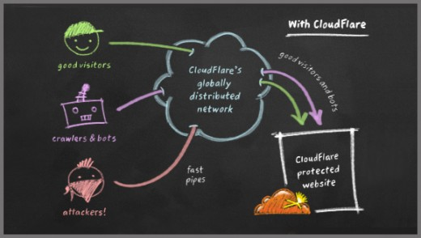
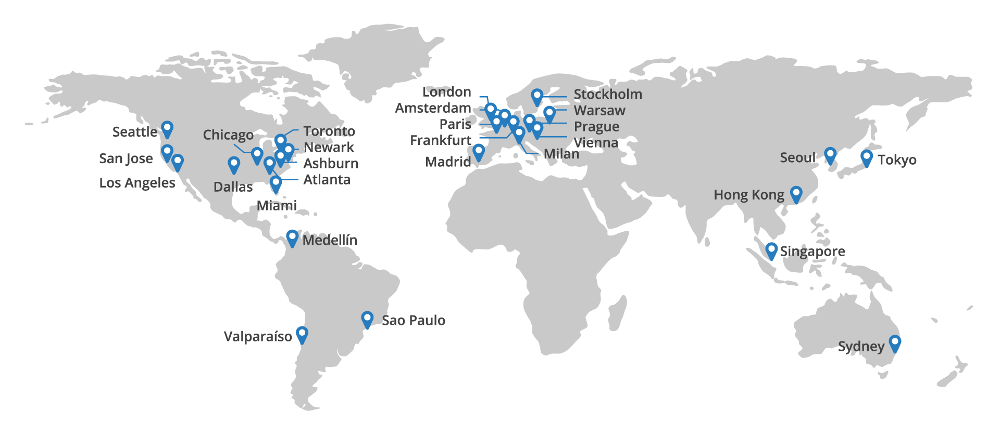
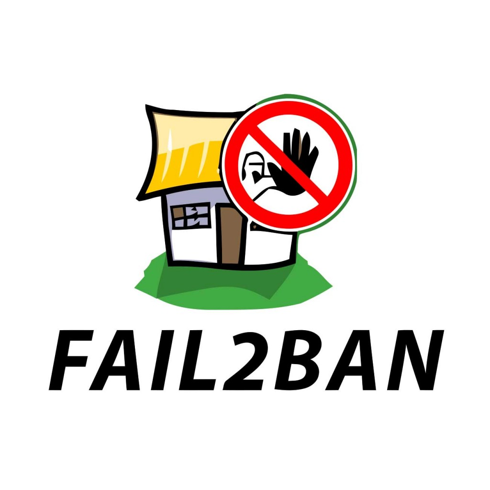

<!doctype html>
<html lang="en">

	<head>
		<meta charset="utf-8">

		<title>HTTP-flood атаки (DDoS на 7-м уровне)</title>

		<meta name="description" content="A framework for easily creating beautiful presentations using HTML">
		<meta name="author" content="Hakim El Hattab">

		<meta name="apple-mobile-web-app-capable" content="yes" />
		<meta name="apple-mobile-web-app-status-bar-style" content="black-translucent" />

		<meta name="viewport" content="width=device-width, initial-scale=1.0, maximum-scale=1.0, user-scalable=no">

		<link rel="stylesheet" href="css/reveal.min.css">
		<link rel="stylesheet" href="css/theme/sky2.css" id="theme">

		<!-- For syntax highlighting -->
		<link rel="stylesheet" href="lib/css/zenburn.css">

		<!-- If the query includes 'print-pdf', include the PDF print sheet -->
		<script>
			if( window.location.search.match( /print-pdf/gi ) ) {
				var link = document.createElement( 'link' );
				link.rel = 'stylesheet';
				link.type = 'text/css';
				link.href = 'css/print/pdf.css';
				document.getElementsByTagName( 'head' )[0].appendChild( link );
			}
		</script>


		<!--[if lt IE 9]>
		<script src="lib/js/html5shiv.js"></script>
		<![endif]-->
	</head>

	<body>

		<div class="reveal">

			<!-- Any section element inside of this container is displayed as a slide -->
			<div class="slides">
				<section data-markdown>
					<script type="text/template">
						# HTTP-flood

						### (DDoS атаки на 7-м уровне OSI)

						<!--
						[default](?)
						[sky](?theme=sky)
						[beige](?theme=beige)
						[simple](?theme=simple)
						[serif](?theme=serif)
						[night](?theme=night)
						[moon](?theme=moon)
						[solarized](?theme=solarized)
						-->
					</script>
				</section>

				<section data-markdown>
					<script type="text/template">
						

						<aside class="notes">
							Картина в целом - пользователи неотделимы от ботов, на всех
							не хватает ресурсов.
						</aside>
					</script>
				</section>

				<section data-markdown>
					<script type="text/template">
						## Ключевые характеристики атаки

						* Размер ботнета/количество запросов с адреса
						* Валидные и разные user agent
						* Валидные и разные cookie
						* Запросы, как в приложении
						* Могут ли боты обрабатывать js

						<aside class="notes">
							Самый плохой случай - бот неотличимый от пользователя.
						</aside>
					</script>
				</section>

				<section>
					<section data-markdown>
						<script type="text/template">
							## Сервисы

							* Cloud flare
							* Reg.ru + DDoS Guard
						</script>
					</section>
					<section data-markdown>
						<script type="text/template">
							## Cloud flare

							
						</script>
					</section>
					<section data-markdown>
						<script type="text/template">
							## Инфраструктура

							
						</script>
					</section>
					<section data-markdown>
						<script type="text/template">
							## Плюсы и минусы сервисов

							\+ Не надо настраивать

							\+ Много ресурсов

							\- Полная зависимость от провайдера

							\- Цена и ограничения
						</script>
					</section>
				</section>

				<section>
					<section data-markdown>
						<script type="text/template">
							## nginx

							* фильтрация по шаблонам
							* ngx_http_access_module
							* geoip
						</script>
					</section>
					<section data-markdown>
						<script type="text/template">
							## Недостатки

							* Относительно высокая нагрузка
							* Ручная блокировка
							* Зависит от ЦА

							<aside class="notes">
								Все просто, подходит для маломощных атак - ручной блокировки
								и блокировки по странам.
							</aside>
						</script>
					</section>
				</section>

				<section>
					<section data-markdown>
						<script type="text/template">
							## fail2ban + iptables

							
						</script>
					</section>
					<section data-markdown>
						<script type="text/template">
							## Принципы работы

							* Задание шаблонов запросов и условий
							* Парсинг логов
							* Поиск совпадений с шаблоном
							* Проверка выполнения условия
							* Бан IP на указанный период
							* Снятие бана
						</script>
					</section>
					<section data-markdown>
						<script type="text/template">
							## Проблемы на практике

							* Производительность
							* Ротация логов
							* Перезапуск
							* Не работает против распределенных атак
						</script>
					</section>
				</section>

				<section>
					<section data-markdown>
						<script type="text/template">
							* Детальное изучение, оценка существующих инструментов и методик
							* Синтетические тесты производительности
							* Воссоздание среды приближенной к реальным условиям
							* Совершенствование/выработка методики
						</script>
					</section>
				</section>

				<section>
					<section data-markdown>
						<script type="text/template">
							## Вопросы?
						</script>
					</section>
				</section>

			</div>

		</div>

		<script src="lib/js/head.min.js"></script>
		<script src="js/reveal.min.js"></script>

		<script>

			// Full list of configuration options available here:
			// https://github.com/hakimel/reveal.js#configuration
			Reveal.initialize({
				controls: true,
				progress: true,
				history: true,
				center: true,

				theme: Reveal.getQueryHash().theme, // available themes are in /css/theme
				transition: Reveal.getQueryHash().transition || 'default', // default/cube/page/concave/zoom/linear/fade/none

				// Parallax scrolling
				// parallaxBackgroundImage: 'https://s3.amazonaws.com/hakim-static/reveal-js/reveal-parallax-1.jpg',
				// parallaxBackgroundSize: '2100px 900px',

				// Optional libraries used to extend on reveal.js
				dependencies: [
					{ src: 'lib/js/classList.js', condition: function() { return !document.body.classList; } },
					{ src: 'plugin/markdown/marked.js', condition: function() { return !!document.querySelector( '[data-markdown]' ); } },
					{ src: 'plugin/markdown/markdown.js', condition: function() { return !!document.querySelector( '[data-markdown]' ); } },
					{ src: 'plugin/highlight/highlight.js', async: true, callback: function() { hljs.initHighlightingOnLoad(); } },
					{ src: 'plugin/zoom-js/zoom.js', async: true, condition: function() { return !!document.body.classList; } },
					{ src: 'plugin/notes/notes.js', async: true, condition: function() { return !!document.body.classList; } }
				]
			});

		</script>

	</body>
</html>
